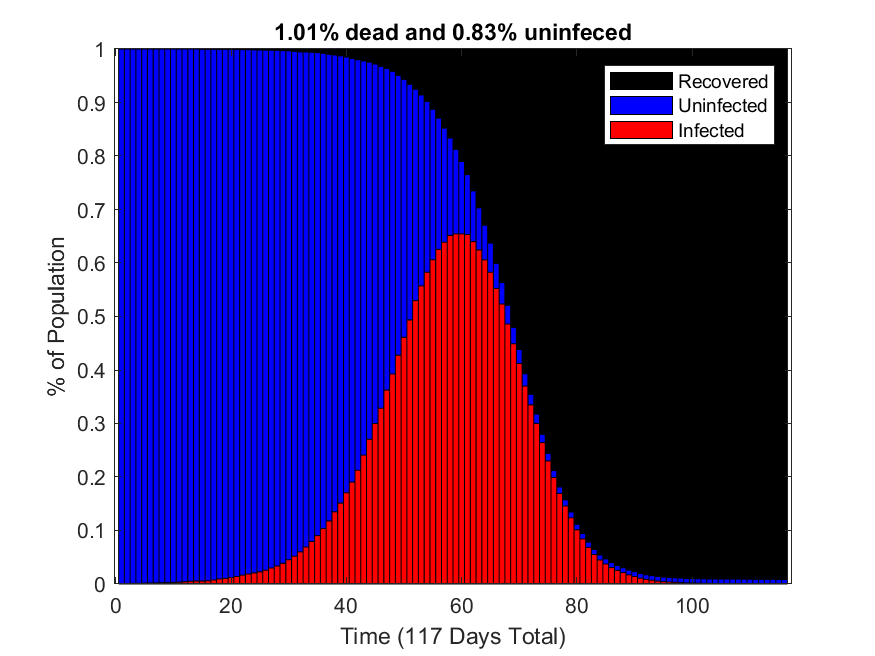
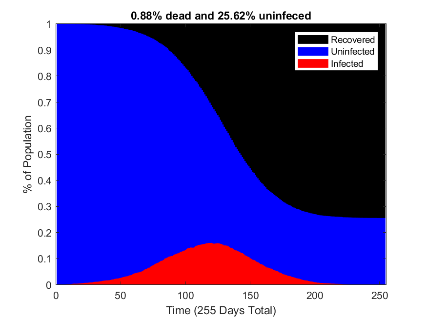

This simulation was created on March 30 and 31 of 2020, during the onset of the COVID induced shutdowns in America. This simulation models how an infectious disease spreads through a population and demonstrates the kind of impact social distancing practices can have. Though the parameters of this simulation were chosen to resemble COVID, by no means is this to be interpreted as a prediction. Many of the parameters chosen were taken from this paper. It's from March 16, and there's been a lot more COVID data released since then so it's likely that the parameters chosen really no longer resemble our understanding of COVID. In the plots below, blue is healthy, red is infected, and black is recovered and dead. The top graphs shows the state of the population as a function of time. The bottom gifs are maps of the population where each dot represents an individual.
| Without Social Distancing | With Social Distancing |
|---|---|
|  |  |
| Without Social Distancing | With Social Distancing |
|
|
|
The source code is here, it's the most user friendly code I have written to date. There are many easily togglable variables: population size, if social distancing happens, how many people need to be sick for social distancing to start, by what factor does social distancing reduce the propability of infection for an individual, how long are people sick, how long does it take to go from being infected to being contagious, what is the healthcare systems capacity, what is the mortality rate with and without medical care, and of coarse how infectious is the disease. The population is distributed uniformly over a square area whose size is determined such that the population density is constant. The probability of an individual infecting another individual on a given day is
\(\frac{f_{SD}}{\pi}\arctan{f_s r^{-2}}\).
Where \(f_{SD}\) is the factor by which practicing social distancing reduces infection chance, \(f_s\) is the constant that scales how infectious the disease is, and \(r\) is the distance between the two individuals. There is no evidence for this function, I just though it was reasonable for infection chance to go as \(r^{-2}\) and \(\tan\) is being used to map \([0,1]\) to \([0,\infty]\).
Practicing social distancing leads to a lower mortality rate for two reasons. One is that the number of individuals who are never infected is higher when practicing social distancing. The other reason is that when the medical system is overwhelmed, as happens when not practicing social distancing, the effective mortality rate increases.